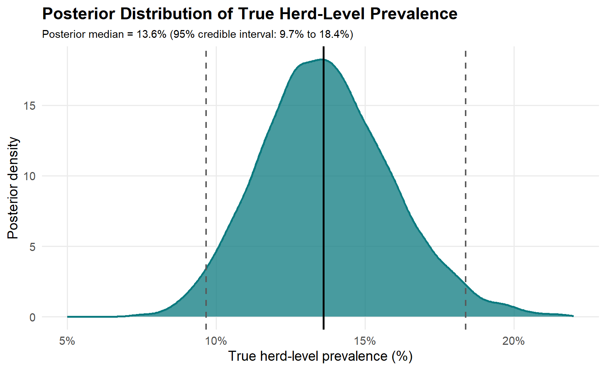
Research Visualizations
These figures showcase my analytical workflow for Bayesian prevalence estimation, latent-mixture modelling, and risk factor analysis in veterinary epidemiology. All visualizations are based on simulated data designed to reflect the modelling frameworks used in my published and ongoing research.
1. Posterior Distribution of True Herd-Level Prevalence
Key takeaway: The posterior distribution shows that the true herd-level prevalence is most plausibly around 14%, with the 95% credible interval reflecting uncertainty after adjustment for imperfect diagnostic performance.
2. Risk Factors – Forest Plot of Adjusted Odds Ratios
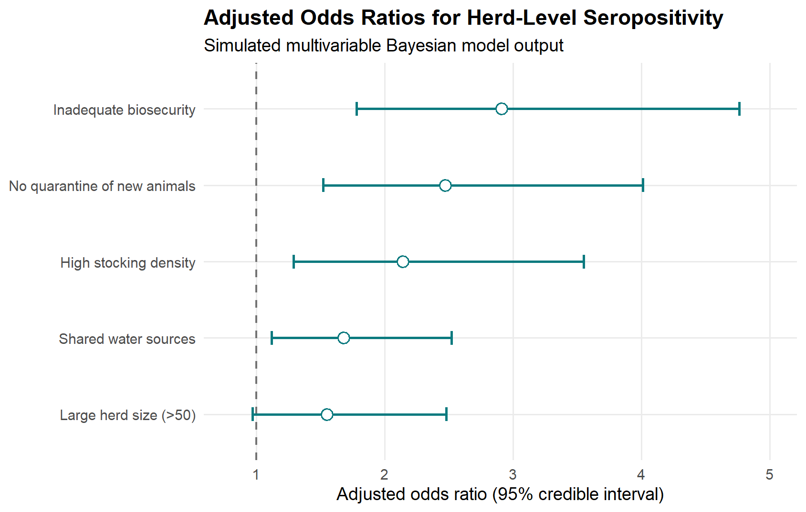
Key takeaway: The strongest associations are linked to management and biosecurity practices, with odds ratios above 1 indicating increased odds of herd-level seropositivity.
3. Apparent vs True Prevalence Comparison
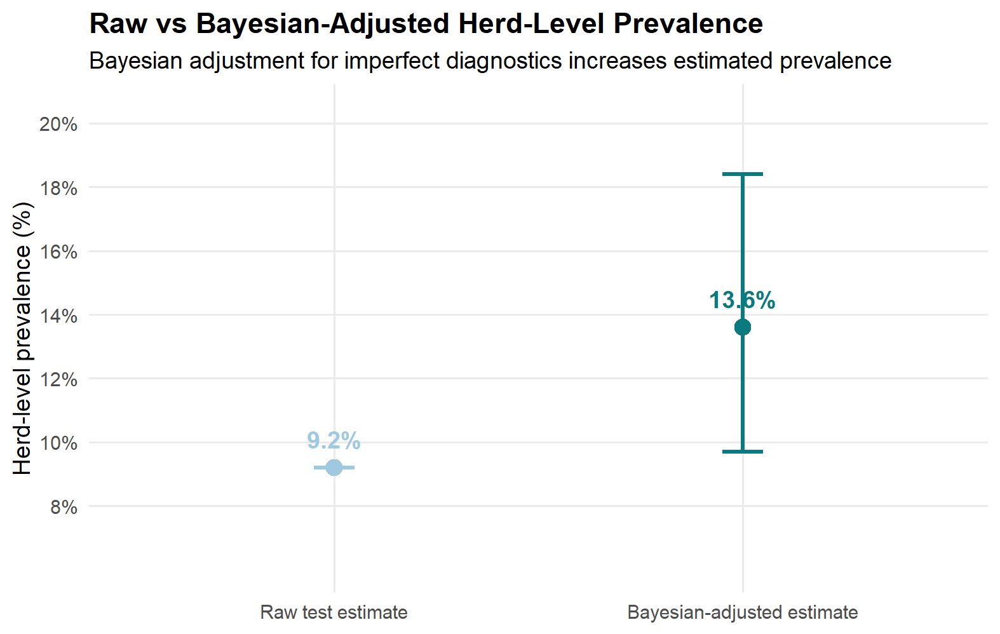
Key takeaway: Presenting the raw test estimate alongside the Bayesian-adjusted estimate shows how imperfect diagnostic performance can materially underestimate the true herd-level burden.
4. Simulated Spatiotemporal Prevalence Distribution
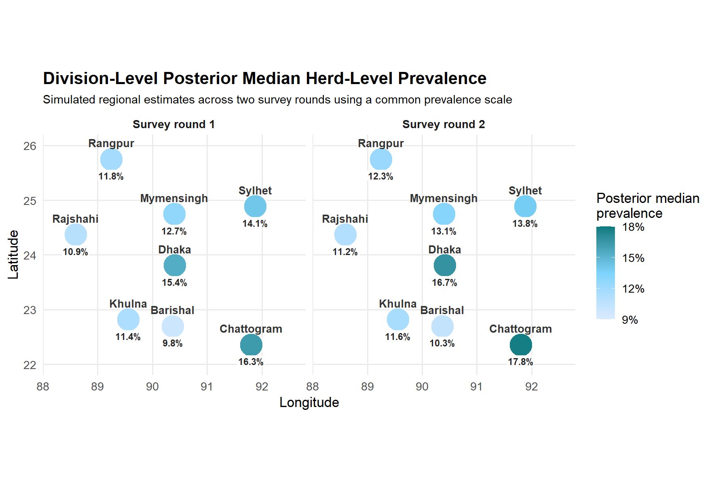
Key takeaway: Using a common color scale across survey rounds makes regional heterogeneity easier to compare and highlights persistent higher-burden areas such as Dhaka and Chattogram in this simulated example.
5. MCMC Trace Plots – Convergence Diagnostics
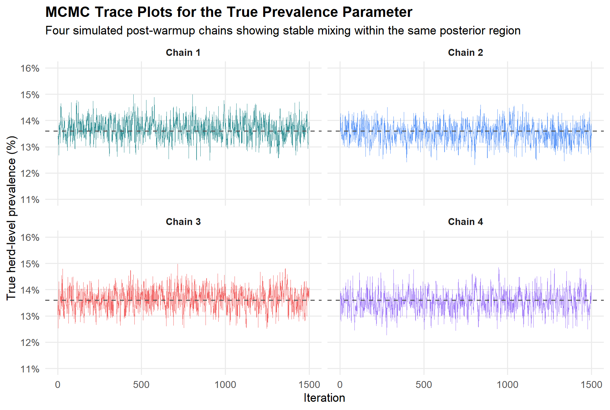
Key takeaway: The four post-warmup chains fluctuate within the same narrow posterior region without visible drift or persistent separation, suggesting good visual mixing for the prevalence parameter.
6. Posterior Predictive Check – Model Fit Assessment
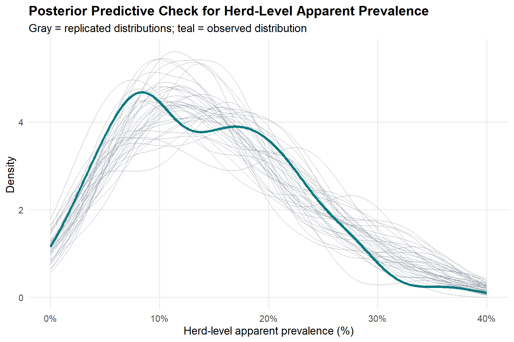
Key takeaway: The close overlap between the observed and replicated herd-level prevalence distributions suggests that the model reproduces the central tendency, spread, and between-herd heterogeneity of the serological data reasonably well.
7. Hierarchical Shrinkage – Partial Pooling in Multilevel Models
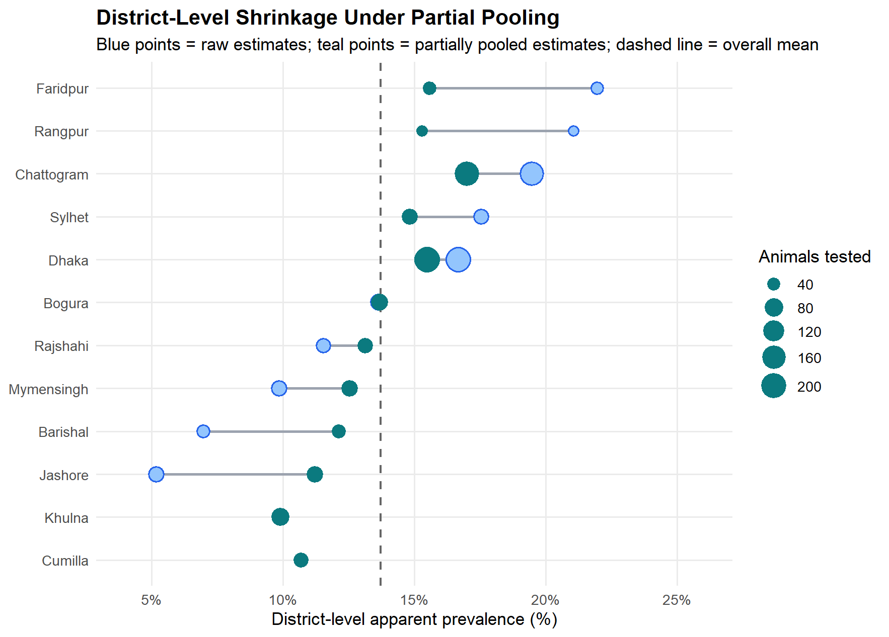
Key takeaway: Partial pooling pulls district-specific estimates toward the overall mean, especially for districts with smaller sample sizes, reducing instability and over-interpretation of noisy subgroup estimates.
8. Model Comparison – Leave-One-Out Cross-Validation (LOO)
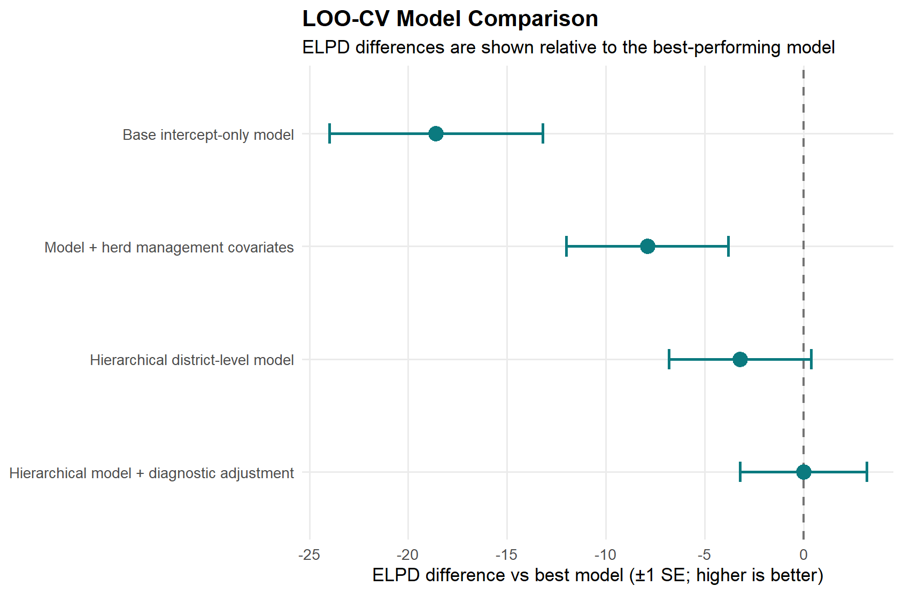
Key takeaway: The hierarchical model with diagnostic adjustment shows the strongest expected out-of-sample predictive performance, while simpler models lose predictive accuracy under LOO-CV.
9. Sensitivity Analysis – Effect of Key Assumptions on the Prevalence Estimate
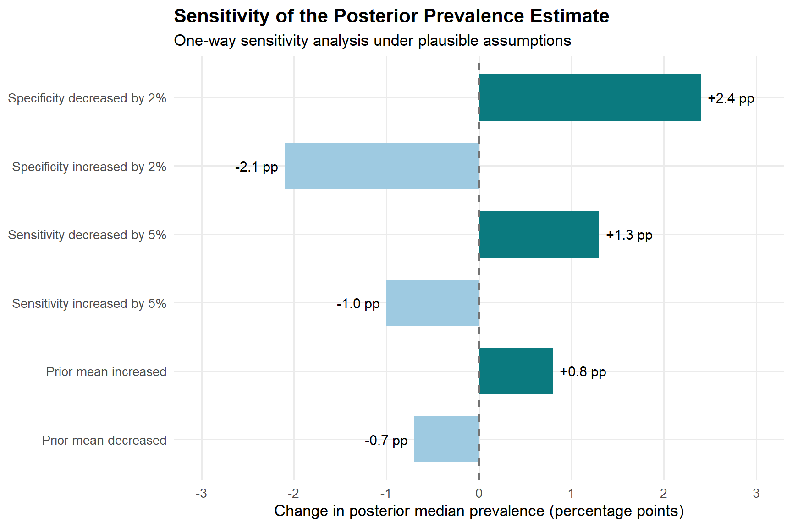
Key takeaway: In this simulated one-way sensitivity analysis, the posterior median prevalence appears most sensitive to plausible changes in diagnostic specificity, whereas comparable changes in sensitivity and prior mean produce smaller shifts in the estimated prevalence.
10. ROC-like Curve – Diagnostic Test Performance Evaluation
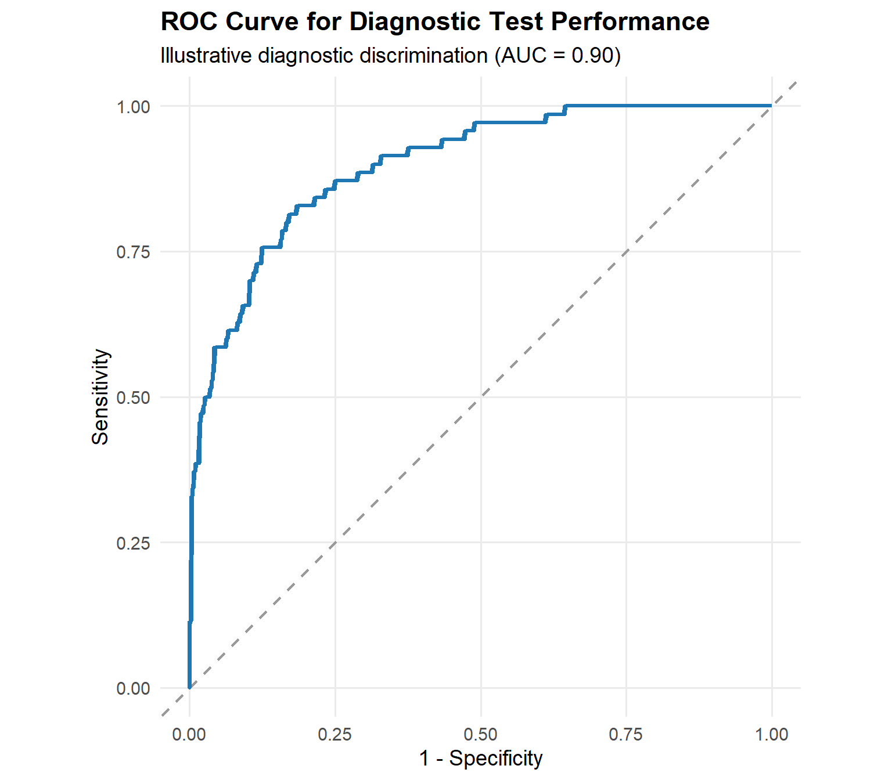
Key takeaway: This simulated ROC curve suggests that the diagnostic score has strong discriminatory ability, with a clear sensitivity–specificity trade-off across thresholds; however, the figure should be interpreted as an illustration of test performance rather than validation from observed field data.
11. Mixture Model Components – Latent Subpopulation Decomposition
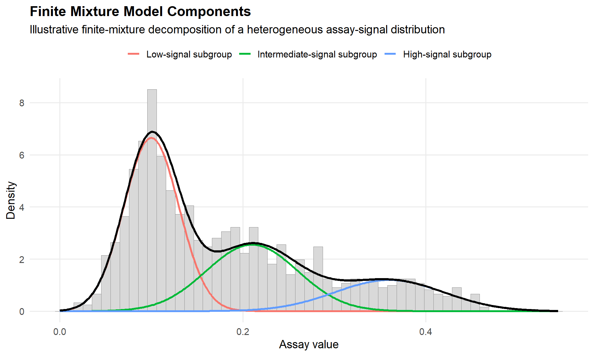
Key takeaway: This simulated finite-mixture plot illustrates how an apparently single assay-signal distribution may reflect multiple overlapping latent subgroups, which can be useful for modelling heterogeneity and improving inference when population-level measurements are not well represented by a single distribution.
12. Bayesian Gaussian Mixture Illustration – Class Separation and Decision Thresholds
Illustrative latent-class distributions with threshold-based separation
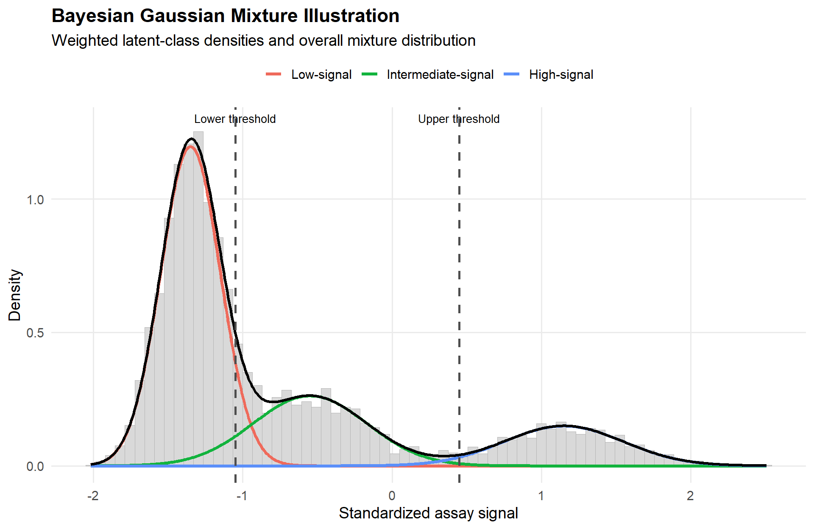
Key takeaway: This illustrative Bayesian Gaussian mixture figure shows how an observed assay-signal distribution can be represented as overlapping latent subgroups, with threshold-based cutoffs providing a practical framework for class separation under measurement uncertainty.